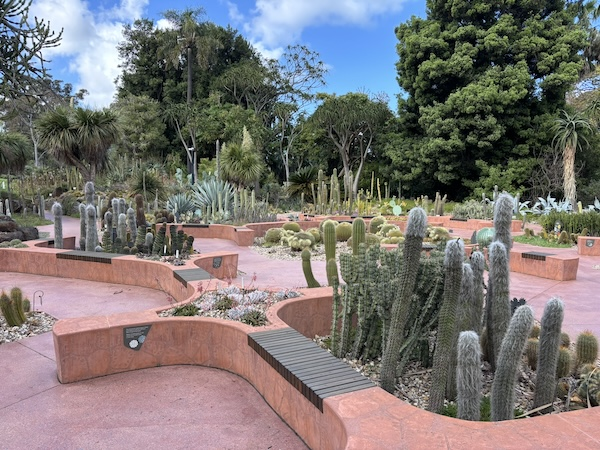
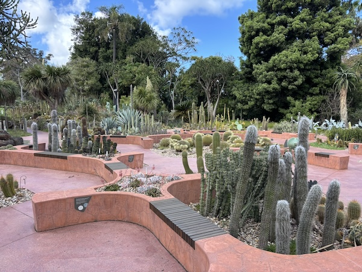

Gardens in Melbourne
There are many beautiful gardens throughout the city that I really enjoyed walking though. The pictures shown are from the Royal Botanical Garden, which had a variety of vegetation.
There are many beautiful gardens throughout the city that I really enjoyed walking though. The pictures shown are from the Royal Botanical Garden, which had a variety of vegetation.
